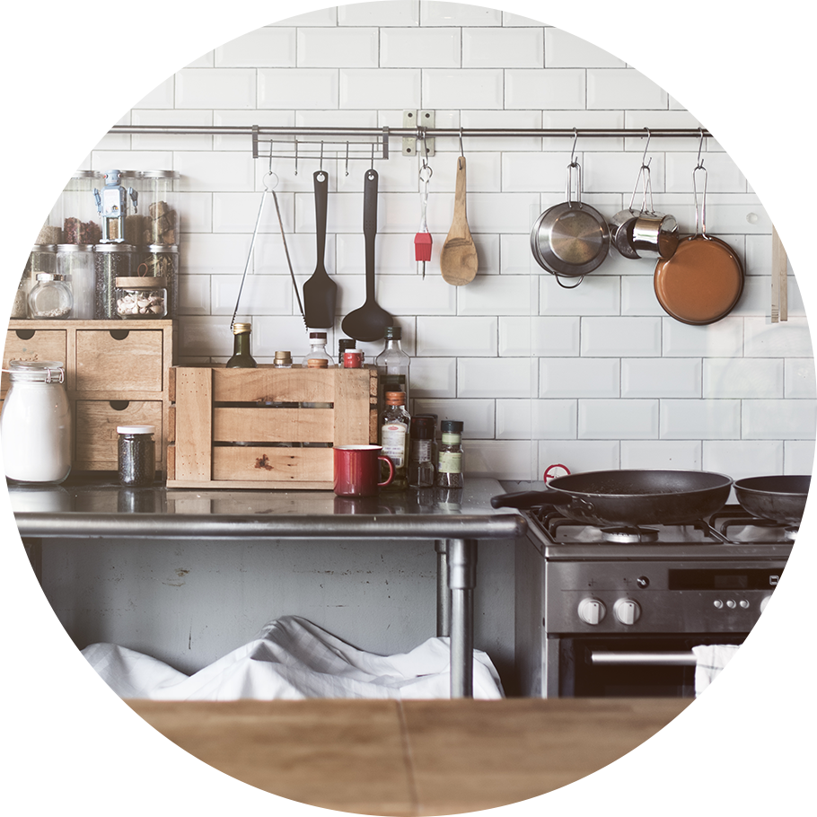

Cooking
with pleasure
with pleasure
Let’s face it, cooking is not a top priority in the lives of every man, woman, or child on the planet. In fact, far too people have made learning to cook a priority in their lives. This means that we often exist on convenience foods and boxed mixes rather than taking the effort to prepare healthy meals for our families and our own personal enjoyment. The same holds true for lunches when we often resort to a can of soup or box of macaroni and cheese or some other such product rather than putting our creative efforts into making a quick and easy yet delicious lunch. You will see
MADE IN UKRAINE
Let’s face it, cooking is not a top priority in the lives of every man, woman, or child on the planet. In fact, far too people have made learning to cook a priority in their lives. This means that we often exist on convenience foods and boxed mixes rather than taking the effort to prepare healthy meals for our families and our own personal enjoyment. The same holds true for lunches when we often resort to a can of soup or box of macaroni and cheese or some other such product rather than putting our creative efforts into making a quick and easy yet delicious lunch. You will see
